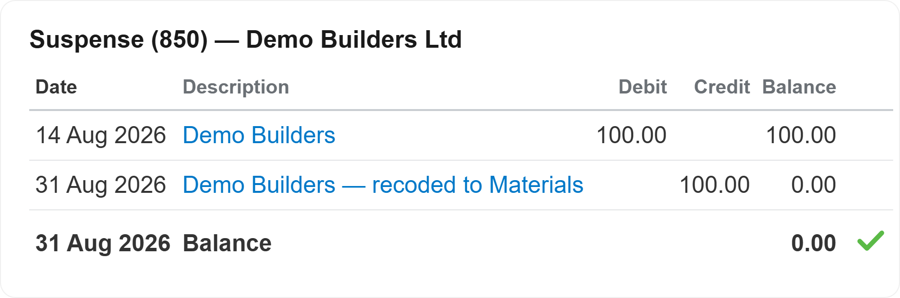
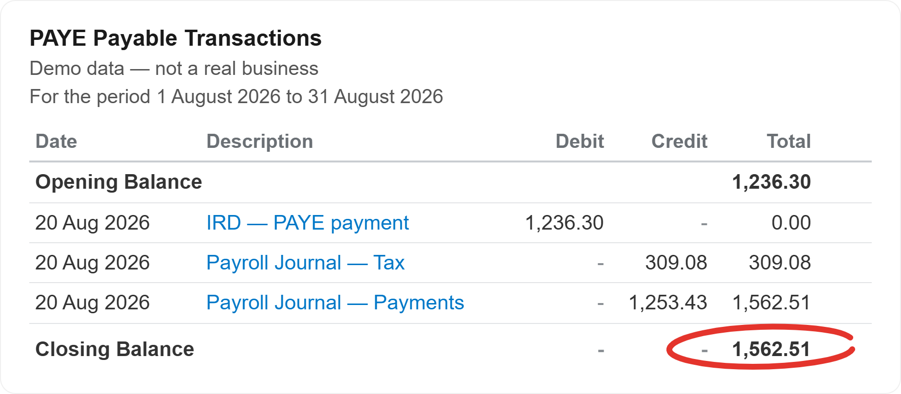

A one-off, independent look through your Xero or your payroll by someone who reads trade books every day. Fixed prices, no ongoing commitment. Prices exclude GST.
A one-off, independent look through your Xero by someone who reads trade books every day. Not a sales call, a written report in plain words on what is right, what is wrong, what it is costing you and how to fix it — plus where automation could save you time.
A report of findings, and a quote to fix any data errors and set up automation and efficiency structures. Training is additional at $125 + GST an hour, quoted separately.
Small business
Medium business
Small or medium? Small is one entity, one or two bank accounts and up to about three people. Medium is more than that, more than one entity, or job costing in play — approximately 4 to 10 staff members.


Payroll mistakes are the expensive kind: they compound every pay run, they upset staff and IRD finds them eventually. This is a one-off check of the last 12 months of your payroll, how it is set up and how it has actually run.
Priced by the size of your payroll. Training is not included and is billed separately at $125 + GST an hour. Data fixing is billed separately at $85 + GST an hour, quoted before I start.
1–3 employees
4–6 employees
7+ employees: $450 + GST, plus $45 + GST per employee above 6.
Works on all main payroll software. Want weekly payroll processing? We offer that for $15 + GST per wage employee and $12 + GST per salary employee. Get in touch for a discussion.
Xero Health & Automation Check: small is one entity, one or two bank accounts and up to about three people; medium is more than that, more than one entity, or job costing in play — approximately 4 to 10 staff members. Payroll Health Check is priced by employees: 1–3, 4–6, or 7+.
No. Christchurch, Selwyn and Canterbury are home, but every product runs in Xero and on a shared screen, so small trade businesses anywhere in New Zealand work with Monique the same way.
Your Xero stays your Xero. The checking tools run on Monique’s own computer, using Claude (by Anthropic), a secure paid AI programme that does not keep or train on your data. Monique grants access to the folders each time she works. Your files sit on a secure OneDrive, the same as normal bookkeeping practice.
No, not automatically. Each check gives you a written report of findings, with a quote to fix any data errors and set up automation or efficiency improvements where relevant — you decide before anything further is done. Data fixing is billed at $85 + GST an hour and training at $125 + GST an hour, both quoted separately.
Try this. Ask your own AI about me. Download the briefing pack and ChatGPT, Claude, Copilot or Gemini can talk you through what I do, what it costs and whether I am a fit for your business.
Download the AI briefing packTell me what is causing frustrations or bottlenecks and I will tell you how I can help.
Book a free chat